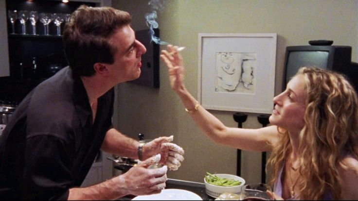

AMOR
¿Amor o una gran expectativa?
Entre lo que imaginamos y lo que sucede hay toda una columna.
Leer columna
La historia de Carrie y Big invita a mirar cuánto espacio puede ocupar alguien que nunca termina de estar disponible. Las expectativas llenan los silencios y una llamada puede convertirse en el acontecimiento de la semana.
La pregunta para llevarse: ¿te gusta la relación que existe hoy o la que esperás que exista mañana? Poner en palabras lo que necesitás puede aclarar más que interpretar cada gesto. Una historia intensa también merece momentos de tranquilidad.